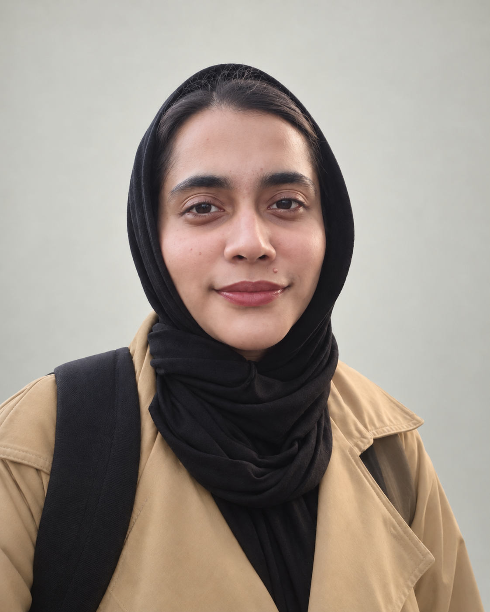

A student. A learner. A work in progress.
Curious mind.
Thoughtful code.
Hello, I’m Minahil Ilyas. A second-year Information Technology student exploring how good code can make everyday experiences better.
Learning at the University of Hertfordshire

A little about me
The person
behind the code.
I’m interested in the space where technology meets the people who use it.
My studies bring together Java, HTML and CSS, and JavaScript fundamentals such as functions, operators, loops and the DOM. I’m learning how these building blocks become clear, useful digital experiences.
I’m also exploring semantic HTML, ARIA and accessibility APIs. Thinking about how different people use a website helps me approach both its structure and its behaviour more thoughtfully.
I’m looking for a placement where I can put these foundations into practice, learn from an experienced team and keep asking better questions.
Have an opportunity in mind?Making room for ideas
A portfolio
taking shape.
One website, a few project ideas,
and plenty of room to grow.
My profile website
A personal space to introduce my interests and bring future work together.
HTML & CSSJavaScriptSee the projectThe next chapter